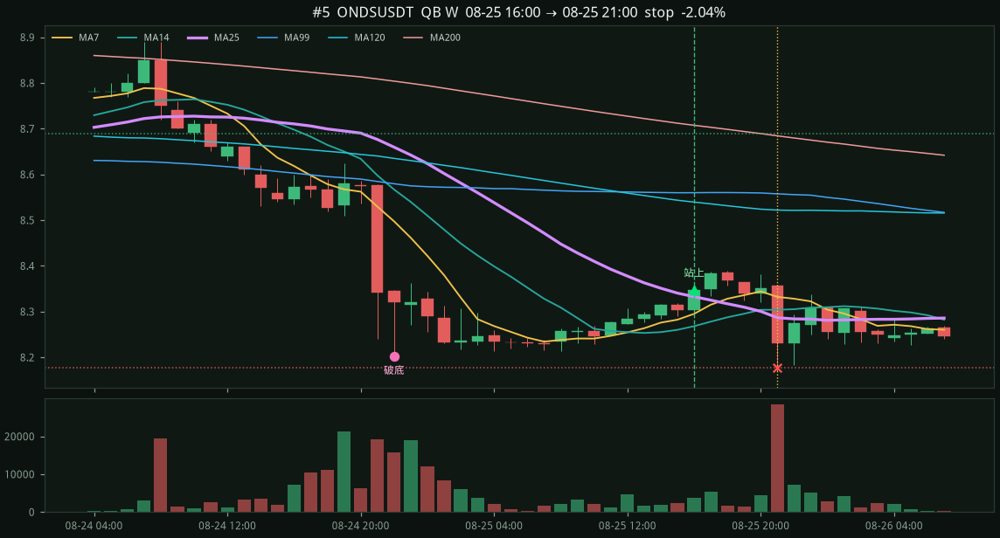
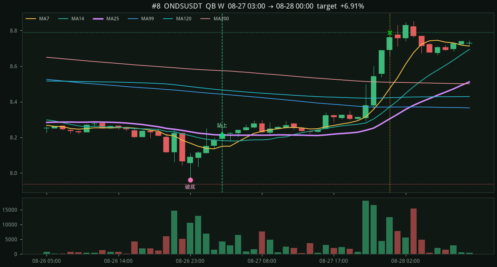
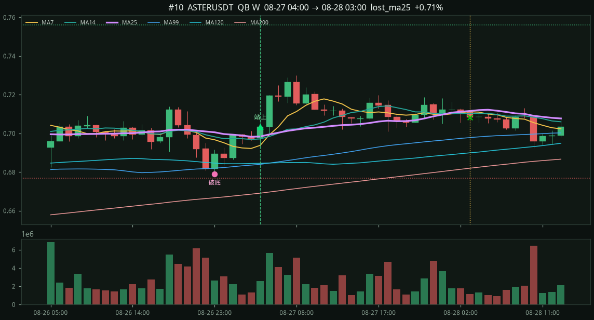
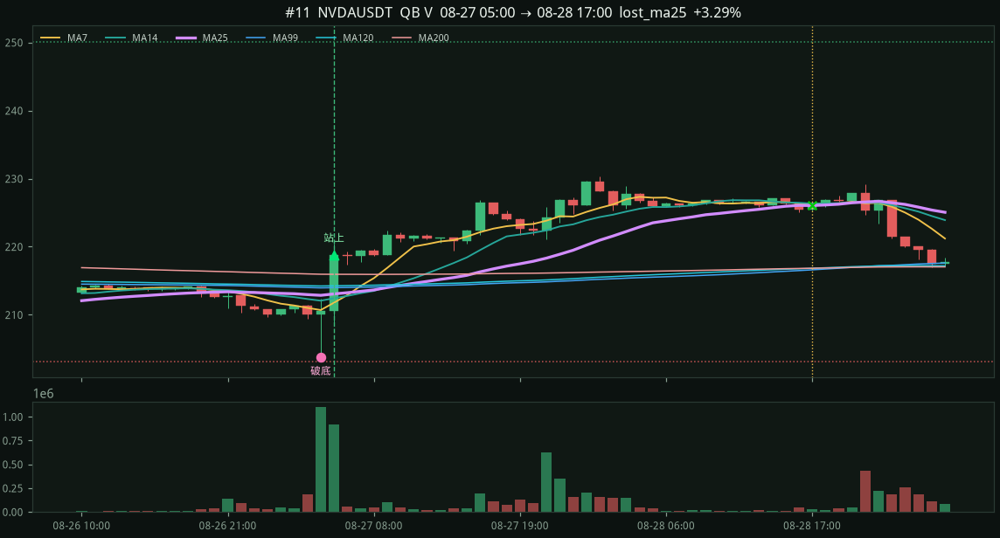
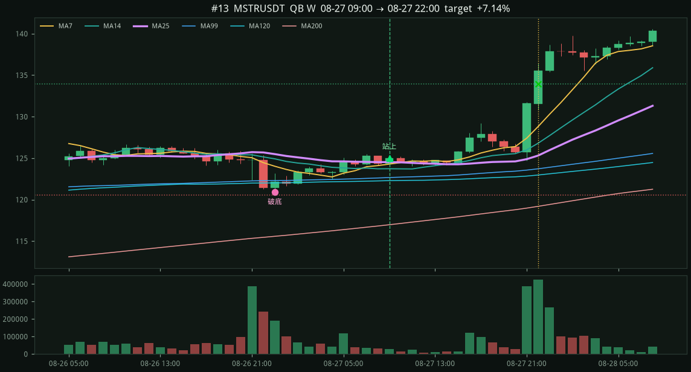
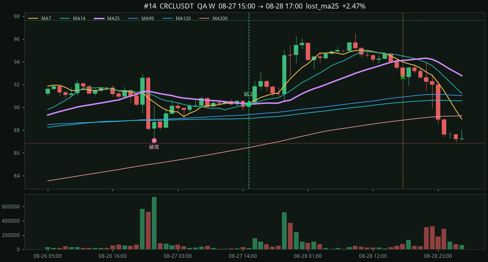
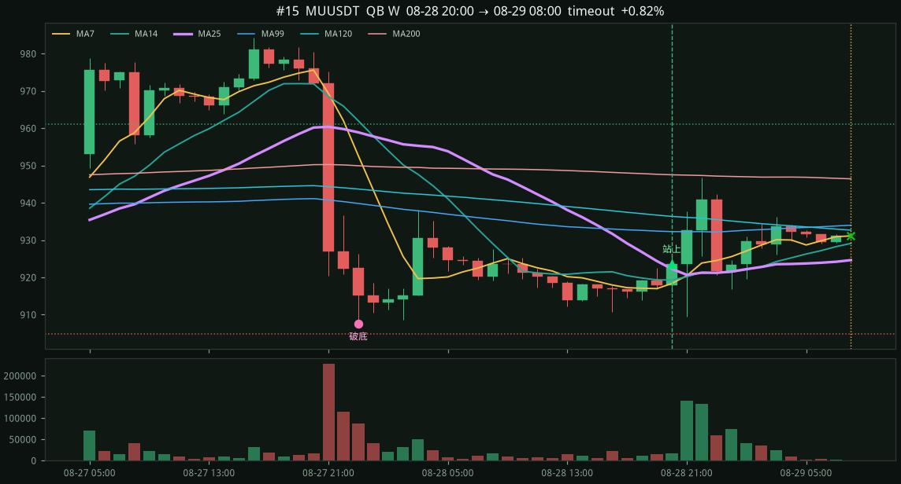
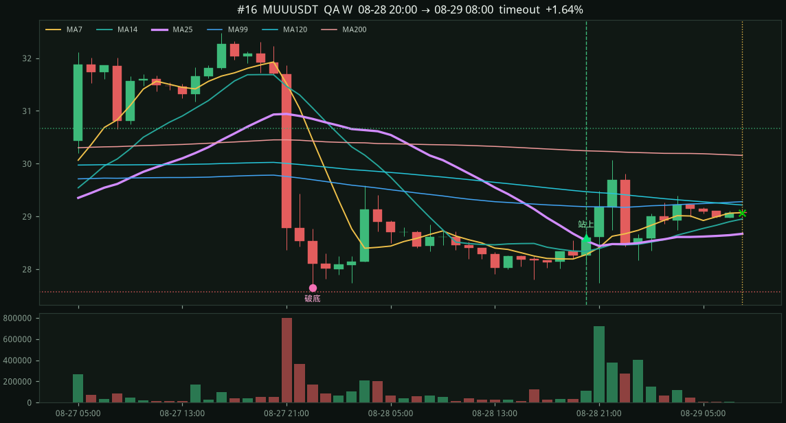

#1 · ONDSUSDT · QB · W2026-08-20 11:00 → 08-20 16:00
-0.90%
entry 8.92 stop 8.60411 (−3.54%) target 9.55178 (2.0R) exit 8.84 lost_ma25 破底 8.63 深度 3.65% 在下 17h 急殺 4.7% / 4.1ATR 破前低 2.7% 量比 0.33x MA25 8.9168

近 14 天 · 掃 80 檔 U 本位永續 · 粉線 MA25
價先收在 MA25 下，再出現跟截圖差不多的急殺：4 根內至少 2.3%、≥ 2.8 ATR，並跌破急殺前平台低點 1.4%。之後收盤站回 MA25。停損破底低點，目標 2R。
卡片 16 筆：AVGO/ONDS 等樣本 + 近 72 小時。
QA 16筆 +20.22% · QB 42筆 +19.18% · QC 1筆 -0.43%
漏斗：跌破 802 → 站回 59 → 進場 59（太短 389 · 太長 67 · 太淺 107 · 急殺不夠 122 · 未站回 58）
entry 8.92 stop 8.60411 (−3.54%) target 9.55178 (2.0R) exit 8.84 lost_ma25 破底 8.63 深度 3.65% 在下 17h 急殺 4.7% / 4.1ATR 破前低 2.7% 量比 0.33x MA25 8.9168
entry 8.42 stop 8.13552 (−3.38%) target 8.98896 (2.0R) exit 8.53 lost_ma25 破底 8.16 深度 8.48% 在下 27h 急殺 8.7% / 7.3ATR 破前低 7.4% 量比 1.42x MA25 8.4144

entry 2414.8 stop 2348.31 (−2.75%) target 2547.77 (2.0R) exit 2473.38 timeout 破底 2355.38 深度 4.06% 在下 28h 急殺 2.8% / 3.3ATR 破前低 1.9% 量比 0.60x MA25 2413.92

entry 695.39 stop 675.258 (−2.90%) target 735.654 (2.0R) exit 704.67 timeout 破底 677.29 深度 3.18% 在下 14h 急殺 3.1% / 3.6ATR 破前低 1.7% 量比 0.95x MA25 692.976

entry 8.348 stop 8.17739 (−2.04%) target 8.68921 (2.0R) exit 8.17739 stop 破底 8.202 深度 6.02% 在下 31h 急殺 4.9% / 4.7ATR 破前低 3.7% 量比 0.66x MA25 8.3324

entry 0.3935 stop 0.373875 (−4.99%) target 0.43275 (2.0R) exit 0.3844 lost_ma25 破底 0.375 深度 7.45% 在下 25h 急殺 5.4% / 2.9ATR 破前低 3.2% 量比 0.78x MA25 0.392816
entry 3.317 stop 3.16079 (−4.71%) target 3.62942 (2.0R) exit 3.3316 lost_ma25 破底 3.1703 深度 8.07% 在下 25h 急殺 6.7% / 2.9ATR 破前低 2.6% 量比 0.66x MA25 3.3087
entry 8.22 stop 7.93612 (−3.45%) target 8.78776 (2.0R) exit 8.78776 target 破底 7.96 深度 3.94% 在下 30h 急殺 3.4% / 4.1ATR 破前低 2.9% 量比 1.19x MA25 8.2132

entry 357.01 stop 349.339 (−2.15%) target 372.352 (2.0R) exit 372.352 target 破底 350.39 深度 2.98% 在下 31h 急殺 2.6% / 4.5ATR 破前低 1.7% 量比 0.99x MA25 356.903
entry 0.7033 stop 0.676863 (−3.76%) target 0.756173 (2.0R) exit 0.7083 lost_ma25 破底 0.6789 深度 3.28% 在下 17h 急殺 4.6% / 3.2ATR 破前低 1.7% 量比 0.92x MA25 0.698376

entry 218.84 stop 203.189 (−7.15%) target 250.143 (2.0R) exit 226.04 lost_ma25 破底 203.8 深度 4.49% 在下 10h 急殺 4.1% / 4.9ATR 破前低 2.8% 量比 10.13x MA25 213.068

entry 0.009353 stop 0.00874768 (−6.47%) target 0.0105636 (2.0R) exit 0.009373 lost_ma25 破底 0.008774 深度 11.25% 在下 35h 急殺 7.8% / 3.9ATR 破前低 5.0% 量比 0.80x MA25 0.00931584
entry 125.01 stop 120.547 (−3.57%) target 133.935 (2.0R) exit 133.935 target 破底 120.91 深度 3.83% 在下 17h 急殺 3.9% / 3.0ATR 破前低 2.6% 量比 0.31x MA25 124.526

entry 90.44 stop 86.8487 (−3.97%) target 97.6227 (2.0R) exit 92.67 lost_ma25 破底 87.11 深度 4.71% 在下 19h 急殺 6.3% / 4.0ATR 破前低 3.6% 量比 0.13x MA25 90.2916

entry 923.52 stop 904.778 (−2.03%) target 961.005 (2.0R) exit 931.13 timeout 破底 907.5 深度 5.51% 在下 23h 急殺 7.4% / 6.5ATR 破前低 5.1% 量比 1.00x MA25 922.272

entry 28.6 stop 27.567 (−3.61%) target 30.6659 (2.0R) exit 29.07 timeout 破底 27.65 深度 10.64% 在下 23h 急殺 14.2% / 6.5ATR 破前低 9.8% 量比 1.70x MA25 28.5408
